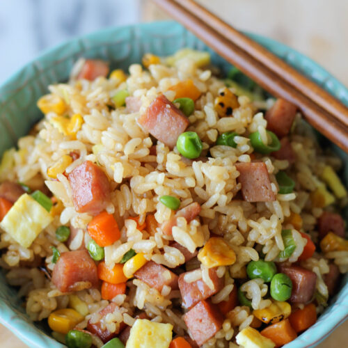

Spam Fried Rice

So with a full pot of perfectly cooked white rice, I couldn't help but make some fried rice. I've made pancetta fried rice and quinoa fried rice so I went a different route using Spam. I know that some people have HUGE aversions to canned meat but Spam was a major staple in our household growing up and it was such a delight when my mom would break open a can of Spam. Plus, with a drizzle of Sriracha, this Spam fried rice quickly became a childhood favorite!
Ingredients:
- 2 tablespoons oil
- 2 large eggs
- 2 cloves garlic
- 6 ounces spam
- 1/2 cup diced carrots
- 3 cups cooked rice
- ... etc
Instructions:
- Heat 1 tablespoon vegetable oil in a large skillet over low heat. Add eggs and cook until cooked through, about 2-3 minutes per side, flipping only once. Let cool before dicing into small pieces.
- Heat remaining 1 tablespoon vegetable oil in the skillet over medium high heat. Add garlic and Spam, and cook, stirring often, until light golden brown, about 3-4 minutes.
- Add corn, peas and carrots. Cook, stirring constantly, until vegetables are tender, about 1-2 minutes.
- ... etc
Link to Home